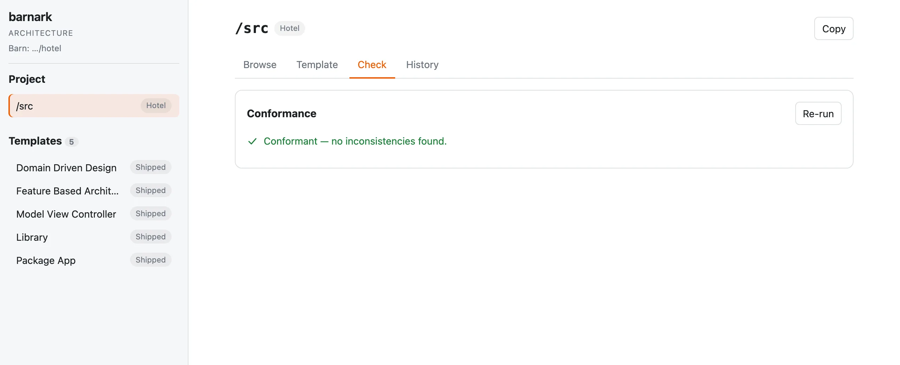

Check the project
Compare the folder with its template, and see where they differ.
The check compares the project’s bound folder with its template and reports where they differ. Nobody has to declare that a project keeps to its architecture: the check says. Files are never checked, because a template says only what folders there are.
Run it #
$ vendor/bin/barnark template:check
Barn: …/hotel
Checking …/hotel/src against 'Hotel'
====================================
[OK] Conformant — no inconsistencies found.With no arguments it checks the bound folder, wherever in the barn you run it. template:check ./src names
the folder. The command exits with status 0 when the folder conforms and 1 when it doesn’t, so it can fail a build.
Missing and unexpected #
There are two kinds of inconsistency, reported separately.
Unexpected #
A folder on disk that the template doesn’t expect:
$ mkdir src/Scratch
$ vendor/bin/barnark template:check
Barn: …/hotel
Checking …/hotel/src against 'Hotel'
====================================
Unexpected — on disk, not expected here
---------------------------------------
…/hotel/src/Scratch
This folder is not part of 'Hotel'.
[ERROR] 1 inconsistency(ies) found.
Take a folder into the template with `barnark template:add-folder <path> <meaning>`, or add it as a member with `barnark template:new`.For each, you decide. Take it into the template, saying what belongs there (template:add-folder, or
Add to template in the browser app), or remove the folder, or leave it showing as an issue.
Missing #
A folder the template expects that isn’t on disk:
$ rm -rf src/Context/Reservation/Application
$ vendor/bin/barnark template:check
Barn: …/hotel
Checking …/hotel/src against 'Hotel'
====================================
Missing — expected here, not found on disk
------------------------------------------
…/hotel/src/Context/Reservation/Application
Expected folder 'Application' here, but it does not exist.
[ERROR] 1 inconsistency(ies) found.Make the folder again, or, if it should not exist, change the template.
Your own members are checked where they are #
A template describes a shape, not your code. The members you added are part of the template, so the check finds your real contexts and aggregates where they actually are, and checks each against its member type. A folder you make by hand in a collection can only be a member of it, so it is checked as one, and reported as missing its folders:
$ mkdir src/Context/Hand
$ vendor/bin/barnark template:check
Barn: …/hotel
Checking …/hotel/src against 'Hotel'
====================================
Missing — expected here, not found on disk
------------------------------------------
…/hotel/src/Context/Hand/Application
Expected folder 'Application' here, but it does not exist.
…/hotel/src/Context/Hand/Domain
Expected folder 'Domain' here, but it does not exist.
…/hotel/src/Context/Hand/Infrastructure
Expected folder 'Infrastructure' here, but it does not exist.A folder made by hand anywhere else is reported as unexpected.
Check a directory against a shipped template #
To check a folder that isn’t the bound one, name a shipped template first and the directory second. There is no record of members to read, so only the folders the template settles on its own are applied.
$ mkdir -p lib2/Api lib2/Stray
$ vendor/bin/barnark template:check Library ./lib2
Barn: …/hotel
Checking ./lib2 against 'Library'
=================================
Missing — expected here, not found on disk
------------------------------------------
./lib2/Internal
Expected folder 'Internal' here, but it does not exist.
./lib2/Api/Contract
Expected folder 'Contract' here, but it does not exist.
./lib2/Api/Exception
Expected folder 'Exception' here, but it does not exist.
./lib2/Api/Factory
Expected folder 'Factory' here, but it does not exist.
./lib2/Api/ValueObject
Expected folder 'ValueObject' here, but it does not exist.
Unexpected — on disk, not expected here
---------------------------------------
./lib2/Stray
This folder is not part of 'Library'.
[ERROR] 6 inconsistency(ies) found.In the browser app #
The Check tab runs the same check. Re-run checks again, and each unexpected folder offers Add to template: give it a meaning and it becomes part of the template as it is, and the check runs again.


Next: keep templates of your own.